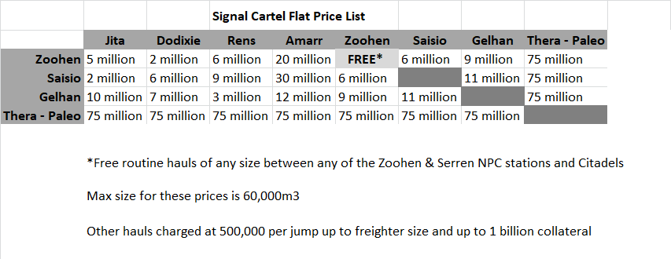

Corp Services: Difference between revisions
Vega Blazar (talk | contribs) |
Vega Blazar (talk | contribs) (removed discord file link and changed to wiki) |
||
| (16 intermediate revisions by the same user not shown) | |||
| Line 1: | Line 1: | ||
{{Template:SignalCartel}}EVE is hard. Playing EVE alone is even harder. In Signal Cartel, in addition to helpful discourse, the corp offers a range of services to aid all our members. Please take advantage of these opportunities - it's why they're offered! | |||
=== | == Buyback Services == | ||
The Signal Cartel | === Blueprint Buyback === | ||
The Signal Cartel Redistribution of Unwanted Blueprints (SCRUBS) is a blueprint buyback service open to all Signaleers. This service will buy any and all blueprints that are located at one of the corp bases or in Jita. Tidy up that item hangar by selling your unwanted blueprints and make some ISK! | |||
To take advantage of this service, please [[ | To take advantage of this service and learn more, please [[SCRUBS|'''click here''']]! | ||
=== | === Loot Buyback === | ||
Signal Cartel | Carrier Logistics LTD is a service corporation to Signal Cartel that allows Signaleers to sell their loot for ISK quickly and without risk. Carrier Logistics operates loot pick-up from each of Signal Cartel's five main bases, offering a fast and friendly service. It is run by Signal Cartel alts solely for the benefit of our corpmates. | ||
Sell that loot quickly and get back to exploring! | |||
To use Carrier Logistics, please [https://carrier-logistics.space/index.php '''click here''']. | |||
== Corp Hauling Service == | |||
Signaleers can take advantage of low-cost hauling provided by Crikey Freight, a hauling, mining, and industry corporation whose membership is made up solely of Signal Cartel alts. It offers reduced fixed-rate transportation between Signal Cartel stations and the trade hubs. Here is a special Signal Cartel price list: | |||
[[File:Crikey Freight Signal Cartel Flat Price List.png|border]] | |||
<br><small>Note: A jump freighter service is also available for a higher fee.</small> | |||
For more info about Crikey Freight, please [[Crikey_Freight|'''click here''']]. | |||
If you are interested in joining Crikey Freight activities with your alt, please also read [[Crikey_Freight#Crikey_Freight_Wants_You.28r_Alt.29.21|Crikey Freight Wants You(r Alt)!]] | |||
[ | |||
== New Member Relocation Service == | |||
The Signal Cartel Relocation and Moving Service (SCRAMS) is a free relocation service available to new members who have been in the corp less than 60 days. This service will relocate the belongings of new Signaleers from their current high-sec base to a Signal Cartel high-sec station of their choice. Relocating to our stations in Thera or Turnur are considered on a case-by-case basis. | |||
To take advantage of this service and learn more, please [[SCRAMS|'''click here''']]! | |||
== Ship and Supply Services == | |||
=== Corp Contracts and Hangars === | |||
Signal Cartel provides free fitted T1 exploration frigates to all corp members. The frigates are available on corporate contracts at all of our bases. Contract acceptance does not require approval. Available ship types are: | |||
* Probe | |||
* Magnate | |||
* Imicus | |||
* Heron | |||
Our bases are also stocked with tons of other useful items like ESRC packs, shuttles, skillbooks, and fireworks! If you cannot find a desired item, please bring it to the relevant [[CS:Station_Quartermasters | Station Quartermaster's]] attention and they will replenish the supply. | |||
To learn how to take advantage of these free offerings, please [[CS:Corporation_Contracts_and_Hangars|'''click here''']]! | |||
=== | === Exploded Explorer Ship Replacement Program (SRP) === | ||
Not only does Signal Cartel provide free T1 frigates to its members, but it also has a Ship Replacement Program (SRP) for pilots who lost Covert Ops exploration frigates, including the Astero! The eligibility criteria are very relaxed, so do not let a misplaced feeling of guilt or embarrassment prevent you from availing yourself of a new shiny frigate. If anything, your participation in the program is Mor Dovorot's raison d'être. | |||
To learn how to get yourself reshipped and back out in the fray, please [[Exploded_Explorer_SRP|'''click here''']]. | |||
=== | === Free Fitted Covert Ops Ship === | ||
[[TS:Thera_Scanning|Thera Scanning]] is one of our core community service projects. To encourage new members to try mapping Thera with us, Tekufah awards new Thera Scanners with a free fitted Covert Ops frigate! | |||
For more details, please [https://discord.com/channels/152437634927427584/1135167433754300506 '''click here''']. | |||
Latest revision as of 21:43, 20 November 2023
| Signal Cartel |
|---|
|
Corp Offerings |
EVE is hard. Playing EVE alone is even harder. In Signal Cartel, in addition to helpful discourse, the corp offers a range of services to aid all our members. Please take advantage of these opportunities - it's why they're offered!
Buyback Services[edit]
Blueprint Buyback[edit]
The Signal Cartel Redistribution of Unwanted Blueprints (SCRUBS) is a blueprint buyback service open to all Signaleers. This service will buy any and all blueprints that are located at one of the corp bases or in Jita. Tidy up that item hangar by selling your unwanted blueprints and make some ISK!
To take advantage of this service and learn more, please click here!
Loot Buyback[edit]
Carrier Logistics LTD is a service corporation to Signal Cartel that allows Signaleers to sell their loot for ISK quickly and without risk. Carrier Logistics operates loot pick-up from each of Signal Cartel's five main bases, offering a fast and friendly service. It is run by Signal Cartel alts solely for the benefit of our corpmates.
Sell that loot quickly and get back to exploring!
To use Carrier Logistics, please click here.
Corp Hauling Service[edit]
Signaleers can take advantage of low-cost hauling provided by Crikey Freight, a hauling, mining, and industry corporation whose membership is made up solely of Signal Cartel alts. It offers reduced fixed-rate transportation between Signal Cartel stations and the trade hubs. Here is a special Signal Cartel price list:

Note: A jump freighter service is also available for a higher fee.
{kind=link}
For more info about Crikey Freight, please click here.
If you are interested in joining Crikey Freight activities with your alt, please also read Crikey Freight Wants You(r Alt)!
New Member Relocation Service[edit]
The Signal Cartel Relocation and Moving Service (SCRAMS) is a free relocation service available to new members who have been in the corp less than 60 days. This service will relocate the belongings of new Signaleers from their current high-sec base to a Signal Cartel high-sec station of their choice. Relocating to our stations in Thera or Turnur are considered on a case-by-case basis.
To take advantage of this service and learn more, please click here!
Ship and Supply Services[edit]
Corp Contracts and Hangars[edit]
Signal Cartel provides free fitted T1 exploration frigates to all corp members. The frigates are available on corporate contracts at all of our bases. Contract acceptance does not require approval. Available ship types are:
- Probe
- Magnate
- Imicus
- Heron
Our bases are also stocked with tons of other useful items like ESRC packs, shuttles, skillbooks, and fireworks! If you cannot find a desired item, please bring it to the relevant Station Quartermaster's attention and they will replenish the supply.
To learn how to take advantage of these free offerings, please click here!
Exploded Explorer Ship Replacement Program (SRP)[edit]
Not only does Signal Cartel provide free T1 frigates to its members, but it also has a Ship Replacement Program (SRP) for pilots who lost Covert Ops exploration frigates, including the Astero! The eligibility criteria are very relaxed, so do not let a misplaced feeling of guilt or embarrassment prevent you from availing yourself of a new shiny frigate. If anything, your participation in the program is Mor Dovorot's raison d'être.
To learn how to get yourself reshipped and back out in the fray, please click here.
Free Fitted Covert Ops Ship[edit]
Thera Scanning is one of our core community service projects. To encourage new members to try mapping Thera with us, Tekufah awards new Thera Scanners with a free fitted Covert Ops frigate!
For more details, please click here.